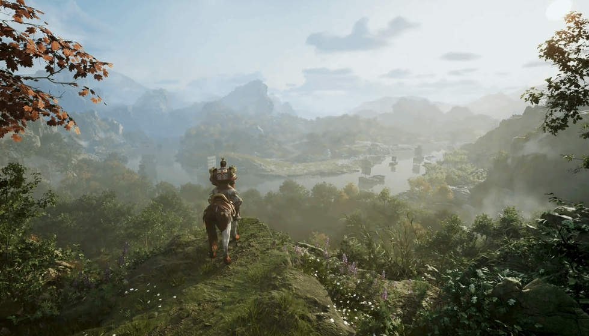

玩了20年英杰传，这份排名前十榜单把我看懵了
兄弟们，最近贴吧和老玩家群里那份《三国志英杰传》武将数值榜单突然又炸了锅。起因是几个数据党闲着没事，把游戏文件里那260号人扒了个底朝天，结果大伙儿发现，有些战场上呼风唤雨的老面孔，数据总评竟然还没一个从头到尾没露过脸的“关系户”高，这上哪儿说理去？
要说这榜单最让人意外的，还不是谁拿了第一，而是东吴那帮大都督们，怎么悄默声地把前十给占了个遍？当年在电脑房泡着的那些日子，咱们眼里全是蜀汉五虎将，谁能想到回头一看，江东这帮水军统领才是数值策划的亲儿子。
更邪乎的还在后头，一位连战场都没上过的“云玩家”碧眼儿，数值总和居然比咱们拼命练级的皇叔还高一截。孙权从头到尾就没在英杰传里露过脸，光荣硬是给了他253的总评，咱们大耳皇叔拢共才230，你说这事儿整的。很多国内玩家可能想不通，孙权凭啥智力给到87统御给到80？说白了，压根不是按史实或者游戏表现来的，纯粹是光荣当年做三国游戏的一条隐性规矩——魏蜀吴三分天下，数值池子也得跟着三分，不能让东吴的扛把子太掉价。这种为了阵营面子强行拉高君主面板的做法，在咱们这帮看惯了实战表现的老炮眼里，早就过时了。现在谁还吃这套“政治正确”啊，你战场上没露过脸，数据再好看那也是虚的。
如果说孙权是“纸上谈兵”，那陆逊火烧连营八百里的战绩摆在那，可光荣给他的武力竟然比周瑜还高，这怕不是把火攻算成了物理攻击？陆逊武力80，周瑜才75，这设定搁谁谁不犯迷糊。咱们国内怀旧玩家心里都有一杆秤，数值就是牌面，但陆逊这高武力低统御的配法，恰恰暴露了早期日厂对“儒将”的刻板印象——好像军师就必须得文武双全，既能摇扇子也得能砍人。放到现在的手游环境里，这种设定绝对被玩家骂到改版，大伙儿现在信奉的是术业有专攻，统帅值才是决定赤壁、夷陵这种大会战走向的关键，武力再高能有张辽高吗？给陆逊85的统御却配上80的武力，这不纯纯数值错位嘛。
看完了江东水军，再回头看蜀汉这俩老将，关羽统御拉满和黄忠挤进前十，大概是老玩家们永远解不开的两个疙瘩。关二爷武力98智力80都说得过去，唯独统御给了个满百，咱们本土玩家心里犯嘀咕，“统御”不光是要打胜仗，你还得会服众吧？败走麦城这事儿摆在眼前，这100分总觉得给得有点虚。黄老将军更是一笔糊涂账，靠着95的武力和90的统御硬挤进前十，你说不合理吧，单项拆开看又挑不出大毛病，可合在一块就是让人浑身不自在。
数值再高，出来混也得看资历。麒麟儿姜维就是最好的反面教材，属性漂亮得不像话，武力90智力94统御80，妥妥的全能战士，结果大伙儿收了他之后，干得最多的活儿竟然是蹲仓库看大门。这痛点太扎心了，英杰传玩到后期，姜维出场时游戏都快通关了，你练吧，经验根本喂不起来，不练吧，看着那面板又割舍不下。多少兄弟当年为了把他转成妖术师拼命刷级，刷到邺城决战都没能登顶，那种青春错付的憋屈，过来人都懂。再看张文远，武力90智力80统御87，哪哪都合理，出场时间又早，用起来那叫一个顺手，这才是数值策划该有的正常审美。

至于二三名，那更是光荣传统艺能——赵云是亲儿子，曹老板是后娘养的，这武力值给的简直像是在逗你。赵云的269总评坐稳第二把交椅，光荣对云妹的偏爱是刻在骨子里的，从英杰传到后续所有三国游戏，赵云永远是一线数据。反观曹老板，武力只给了75，生生被拽到第三，凭啥啊？就因为这作里他是反派？要是按《曹操传》给到82的武力，曹老板总评274直接超赵云，可光荣偏不，这种“反派减武力”的隐形规则，搁现在看真是乱来。
说到底，这份榜单与其说是实力排名，不如说是光荣在1995年那个穷酸年代，为了省素材、凑数据随手拉的一张Excel表。260名武将里塞了不少没登场的角色，还给认认真真填了数值，说白了就是给续作攒素材库的，压根没琢磨什么平衡性。虽说这排名看得人血压蹭蹭往上窜，但回头想想，正是这些不完美甚至胡来的数值，才让当年泡在电脑房里的我们吵得脸红脖子粗，这不就是老游戏那股子劲儿吗？话说回来，大家觉得如果把“统御”改成“人缘”，这前十名里谁第一个被踹出去？赶紧在评论区开喷，咱们下期接着排第11到20，保准还有让你更傻眼的狠角色。
关于我们
📱 公众号名称：三天游戏
✍️ 作者：曾三天
扫码关注公众号，获取每日最新资讯

商务合作与版权
商务合作 / 内容投稿 / 品牌推广
请关注公众号「三天游戏」后台留言联系
版权声明：本文由作者整理，转载需注明出处。